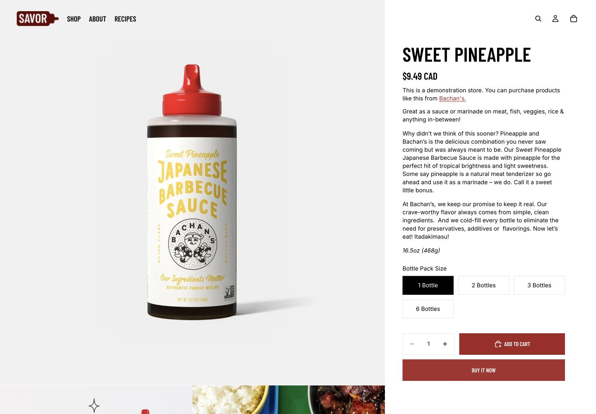
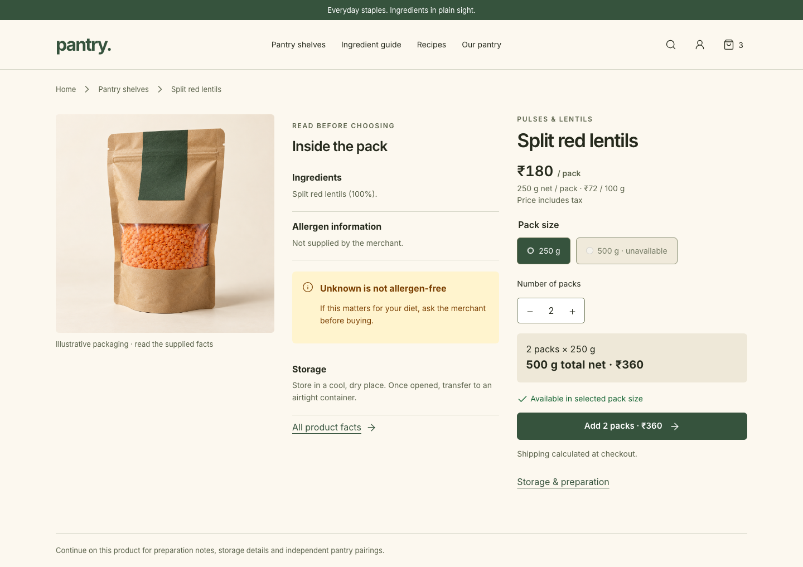
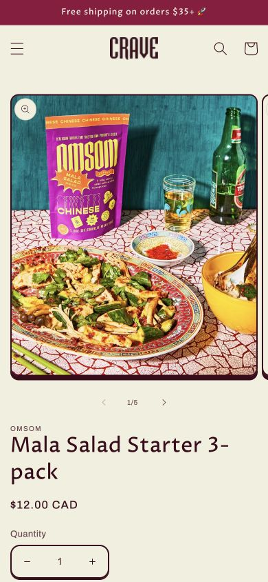
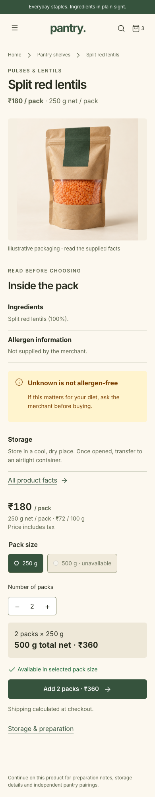

Back to storybookPantry · reference comparisons
Research evidence is separate from original design. No Shopify imagery, copy or logos are used in Pantry storefront source. Saved references retain original appearance; remote pages were never restyled.
Savor → Pantry
Savor public product · 2026-10-22 · 1440 × 1000 DPR1
Saved research product-opening viewport with Bottle Pack Size selected; no cart mutation
Reference opening viewport · saved research. Dossier
Original Pantry v1 · scene 04 · independently rendered at the same width, full-page. Different capture height is explicit.
- Observation
- Whole bottle image beside product copy and named multi-bottle pack controls.
- User problem
- Avoid treating count of packs as total net weight, or flavor copy as allergen evidence.
- Retained convention
- Named purchasable pack choices, whole package imagery and separate quantity.
- Original departure
- Pantry uses three zones: package, explicit ingredients/allergen status, then pack/quantity. Native summary states 2 × 250 g = 500 g and ₹360 before add.
- Required canonical contract
- CAP-04/10 typed ingredients & unknown allergens; CAP-13 unit normalization and server-derived value; CAP-12 cart quantity.
- Evidence limits
- Current web open was inaccessible; this comparison relies on saved dated browser capture, not fresh live interaction.
Crave → Pantry
Crave public product · 2026-10-22 · 390 × 844 DPR1
Saved mobile product opening; current text page opened read-only via web tool, with cached/crawled result freshness limitation
Reference opening viewport · saved research. Dossier
Original Pantry v1 · scene 04 · independently rendered at the same width, full-page. Different capture height is explicit.
- Observation
- Large food/package image precedes product name, price and quantity; ingredients and allergen content exist further down the inspected page.
- User problem
- A narrow-screen buyer should encounter supplied or missing allergen information before commitment.
- Retained convention
- Independent product imagery, preparation context and native quantity controls.
- Original departure
- Pantry puts the ingredient/allergen block before the purchase panel, with no fixed bottom CTA to hide warnings. Recipe and related-product links stay independent.
- Required canonical contract
- CAP-10 safe product-specific food facts; CAP-20 independent related bindings; canonical cart pending/error response.
- Evidence limits
- Opening observation and current page text do not certify full interaction, accessibility, conversion or checkout.
Original neutral structural comparison